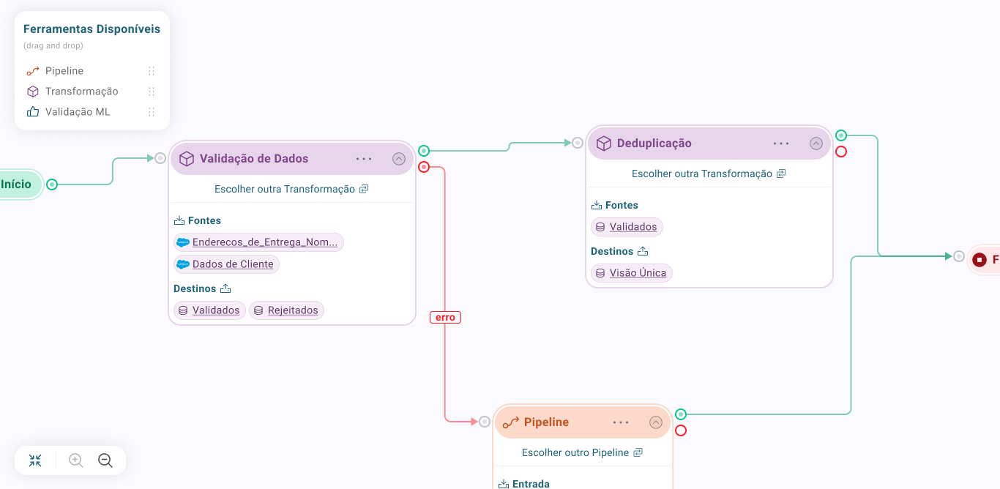
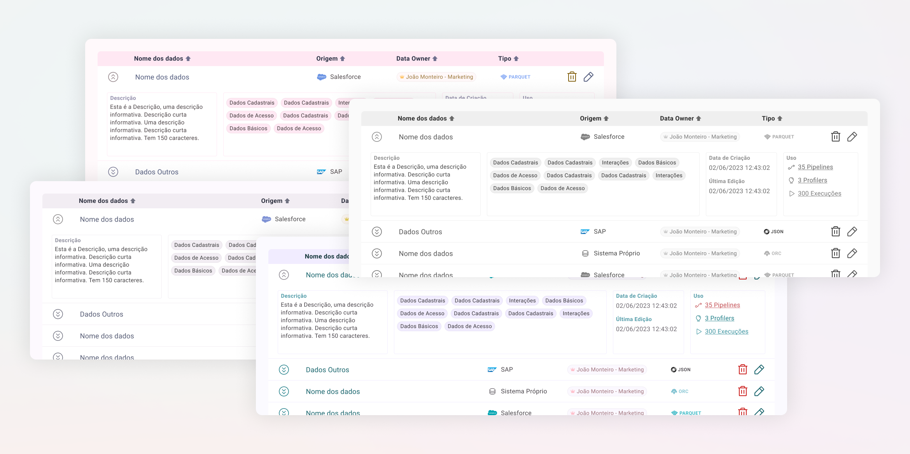
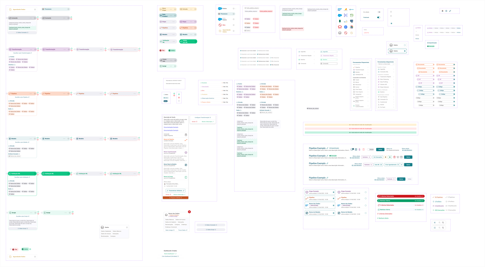
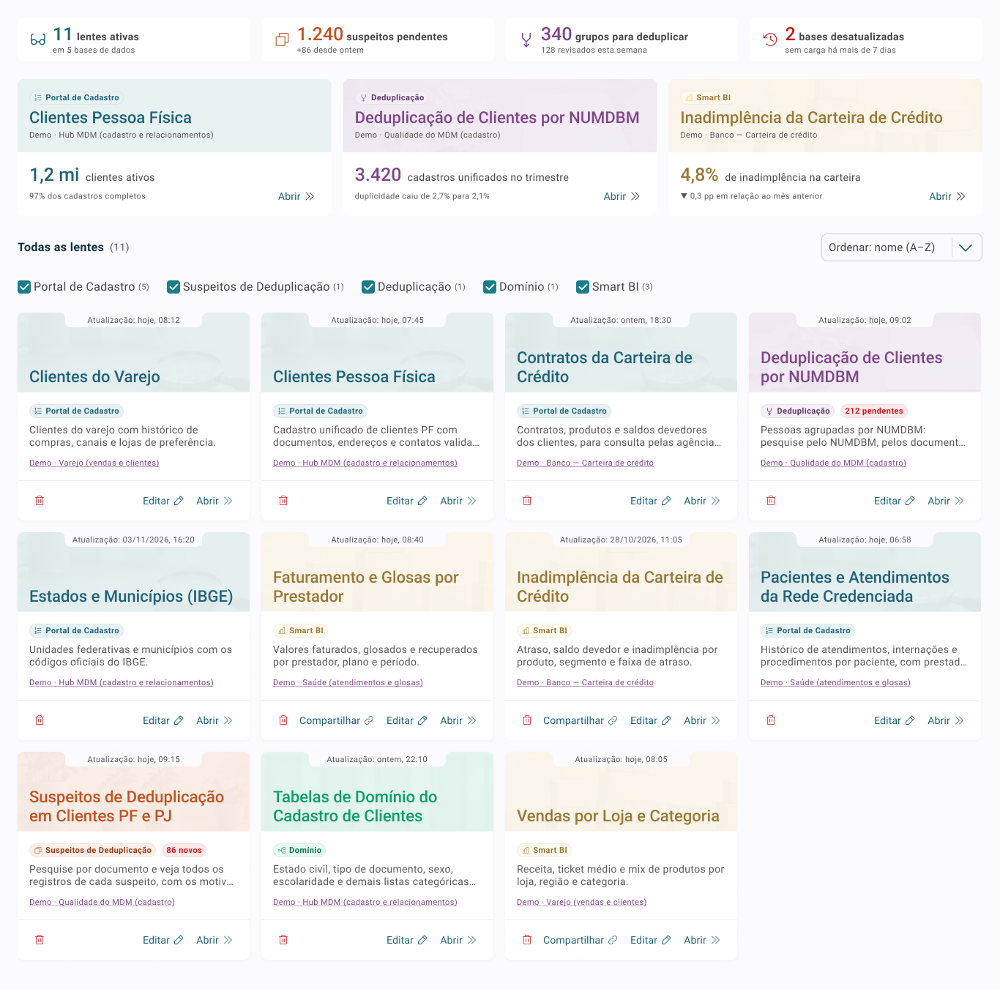
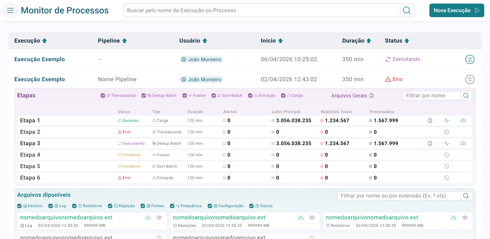
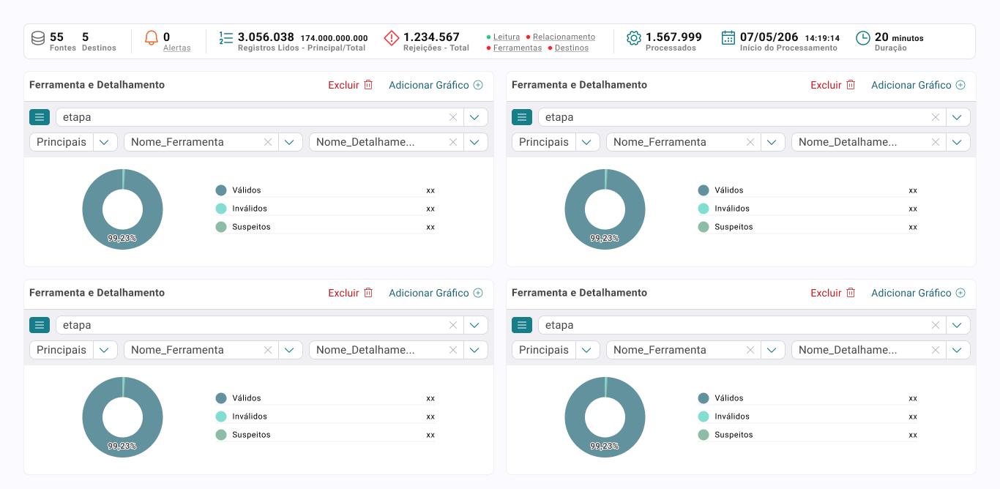

Datacare · Desde 2023
Conhecimento especializado em dados, mais acessível para quem trabalha com eles.
Da leitura dos dados à construção de pipelines: uma plataforma desenhada para a rotina dos analistas.


Contexto e meu papel
A Acesso prestava serviços de tratamento e qualidade de dados e buscava ampliar sua atuação como plataforma. Sua ferramenta própria reunia o conhecimento da empresa sobre dados brasileiros, como CPF e endereços, mas os analistas tinham dificuldade para visualizar os dados, compreender as ferramentas disponíveis e operar a interface. A liderança via nessas dificuldades um obstáculo à agilidade dos processos.
Entrei no início de 2023 como único designer, responsável por desenhar a experiência e trazer referências de mercado para orientar a evolução do produto. Trabalhei próximo ao desenvolvimento, com aprovação do líder de produto, e conduzi conversas e validações com analistas e pessoas externas à empresa.
Minha primeira prioridade foi reorganizar a navegação, as interações e a hierarquia das informações. A visualização dos dados e a orientação sobre ferramentas foram sendo construídas ao longo das entregas.
Uma interface para o ambiente real de trabalho
No contato com os analistas, observei o uso de laptops pequenos e de configuração simples. Adotei 1366 × 768 como referência para as telas: as tarefas precisavam funcionar no espaço disponível para essas pessoas.
Escolhi um tema claro considerando as telas e a iluminação do escritório. Fundos em cinza muito suave, cores derivadas do logo e a tipografia Roboto compunham uma linguagem familiar. A intenção era organizar interfaces densas sem torná-las visualmente pesadas.
O sistema visual reuniu padrões de tipografia, controles e componentes para os diferentes módulos. No pipeline, essa base também precisava ajudar a distinguir tarefas e suas relações.
Legibilidade em diferentes condições de visão
Testo as páginas em diferentes modos de cor para verificar se os textos, ícones e ações continuam fáceis de distinguir. Também avalio o contraste, o tamanho das letras e a proporção entre títulos, rótulos e valores para que a hierarquia da informação continue clara.


Entender os dados antes de tratá-los
O profiler foi uma das primeiras jornadas entregues. Ele reúne, por coluna, uma amostra dos dados, o tipo técnico e semântico, padrões, preenchimento e sugestões de ferramentas. O tipo semântico identifica o significado do conteúdo, como CPF ou telefone, além de sua representação computacional.
Essa visão precisava ser útil para conjuntos que podiam chegar a milhões ou bilhões de registros. A interface apresenta uma amostra, mantendo os gráficos e indicadores superiores visíveis durante a rolagem vertical. A rolagem horizontal permite consultar as demais colunas.
Usei representações visuais diferentes conforme a natureza dos dados. Nas validações, inclusive com não especialistas, participantes conseguiram perceber diferenças entre as colunas pelas representações, sem depender apenas dos nomes.
As sugestões de ferramentas conectam esse diagnóstico ao tratamento. Elas ajudam o analista a escolher operações e podem ser levadas ao pipeline de transformação.
Cor para organizar a complexidade
Os pipelines podiam reunir dezenas de tarefas, cada uma com suas fontes, destinos e configurações. O fluxo completo nem sempre caberia em uma única tela.
Uma proposta interna era atribuir uma cor diferente a cada tarefa. Nas validações, essa variedade dificultou identificar o papel de cada uma. Optei por agrupar as cores por tipo: transformações em roxo e subpipelines em laranja, por exemplo, acompanhados de nomes e ícones.
O agrupamento se sustentou nos testes e estabeleceu uma lógica reutilizável para os componentes. A cor passou a indicar uma categoria reconhecível ao longo do fluxo.


Assistência para escolher o próximo passo
O trabalho também incluiu propostas de IA generativa para interpretar os dados e apoiar a escolha das ferramentas. As telas exploram resumos dos problemas, recomendações com justificativas e um assistente contextual.
Parte desse fluxo ainda não foi implementada. Essas propostas representam uma direção de evolução do produto, distinta das funcionalidades já entregues.
Exploração recente com Claude e Figma
Mais recentemente, explorei outra forma de desenhar páginas para o Datacare. Conectei o Claude ao Figma pelo MCP do Figma e, em conversa com a IA, construí o painel de lentes usando os componentes e os tokens de design que eu já havia criado para a plataforma.


Resultados e aprendizado
A maior parte das soluções apresentadas chegou ao produto. O profiler segue em uso na preparação dos projetos de dados, e os retornos recebidos dos analistas foram positivos. Suas sugestões também levaram a ajustes, como a inclusão de um subtítulo contextual nos modais.
Protótipos foram utilizados pela liderança em apresentações comerciais para comunicar a direção futura da plataforma. As entregas foram negociadas com produto e desenvolvimento, considerando limitações técnicas e tempo de implementação. Esses relatos são evidências qualitativas; não dispomos aqui de métricas para quantificar ganhos de produtividade.
O projeto reforçou para mim a influência do design tanto no trabalho cotidiano quanto nas decisões sobre o produto. Hoje, defenderia de forma mais explícita a participação de pessoas externas e a investigação de outras plataformas. Ouvir quem ainda não conhece os processos ajuda a questionar pressupostos e a construir soluções que façam sentido para além da operação existente.


